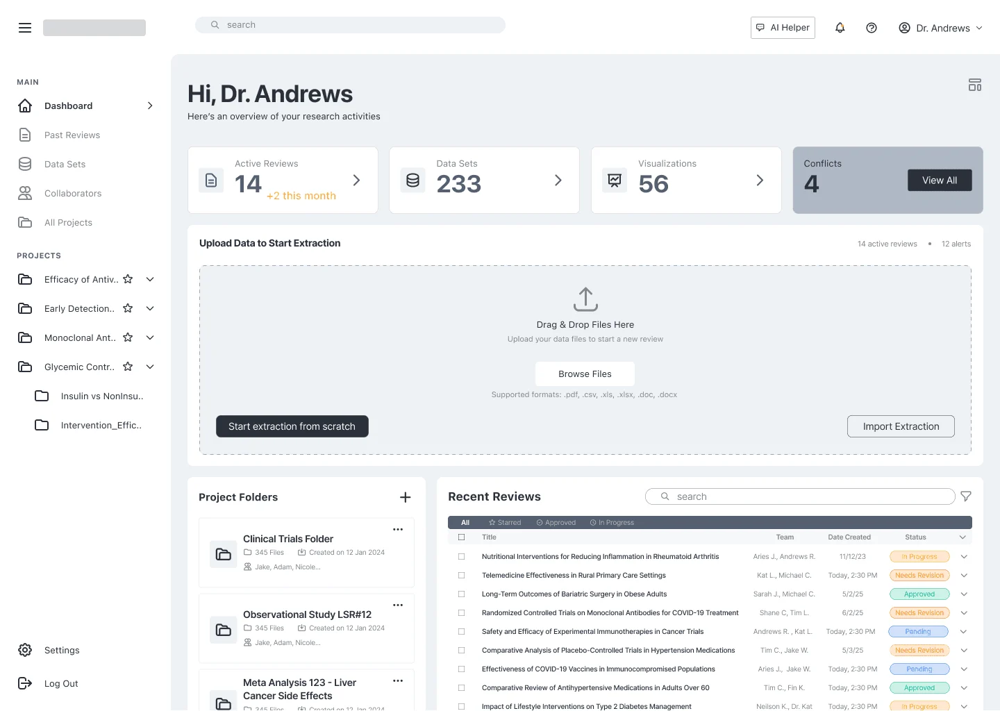

Data Extraction that researchers can trust.
LLMs can help automate extraction. But there was no interface that made it work for researchers. We built one.
A randomized, double-blind, placebo-controlled trial with an 8-week intervention period of 500 mg magnesium oxide daily versus placebo. Sleep quality was assessed using the Insomnia Severity Index.
Copying values from PDFs, by hand, forever.
Every new paper restarted the cycle for Mayo Clinic's review teams.
An extraction workflow with a human in charge.
Upload, let the AI draft the table, then review what it isn't sure about.
Making AI output trustworthy enough to use.
Confidence, conflicts and sources became the design, not add-ons.
Manual. Time-consuming. Prone to error.
Researchers at Mayo Clinic were copying values from PDFs into spreadsheets by hand. Across hundreds of studies. Every time a new paper dropped.
Manual
Values are copied from PDFs into spreadsheets by hand. When a new study drops, the cycle starts again.
Time-consuming
A single living systematic review can take months. Existing tools add configuration overhead instead of reducing it.
Prone to error
Manual transcription introduces missed fields and undetected conflicts across large teams.
Why not just use ChatGPT?
The tools exist, but the interface doesn't. That's the gap we designed for.
The AI can draft. A researcher has to be able to trust it.
An extraction tool is only useful if people know when to believe it. So three signals sit on every value. Try them.
Confidence
Hover a value. A low-confidence answer says so on the cell itself.
Source
Pembrolizumab has a manageable and consistent safety profile. The most common adverse events include fatigue, rash and cough.
Every value points back to the exact passage it came from.
Conflict
When models disagree, a person decides, side by side.
Clinical trial and surveillance data have demonstrated that pembrolizumab has a manageable and consistent safety profile in patients with advanced or metastatic disease. The most common adverse events reported with pembrolizumab monotherapy include fatigue, musculoskeletal pain, rash, diarrhea, pyrexia, cough and decreased appetite.
Although the safety profile of pembrolizumab is well established in the advanced or metastatic setting, it has not been characterized across indications in the adjuvant setting.
From scattered pain points to three priorities.
We mapped the full review workflow, then clustered what hurt. Everything fell into the same three buckets.
Brainstorming
Mapped the full review workflow and found the highest-friction moments.
Affinity diagramming
Clustered pain points into priorities before touching a wireframe.
Lo-fi wireframes
Rapid layout flows and interaction models. Structure, not visuals.
Hi-fi prototype
Real data structure, a component library, every decision justified.
Can we make it simpler without losing control? If not, we cut it.The test every screen had to pass
Version 2 gave every AI step an exit.
Every branch has an exit. Every AI step has a human fallback.
From a pile of PDFs to a table you can trust.
Walk through the four screens a researcher meets. Tap the markers.

The whole flow, start to resolved.
How did designing for AI change the way I think about UX?
Working on this project pushed me to rethink the role of a designer in systems where AI is not just a tool but a collaborator. I came in assuming AI would simply automate the repetitive work. What I found was more nuanced.
Embedding LLM capabilities into a workflow only works when users can understand, trust, and know when to override what the AI produces. That meant designing for transparency at every step. Confidence scores, conflict flags and source traceability were the design, not features bolted on at the end.
A more careful systems thinker.
A stronger advocate for progressive disclosure.
Intentional about where human judgment should never be replaced.